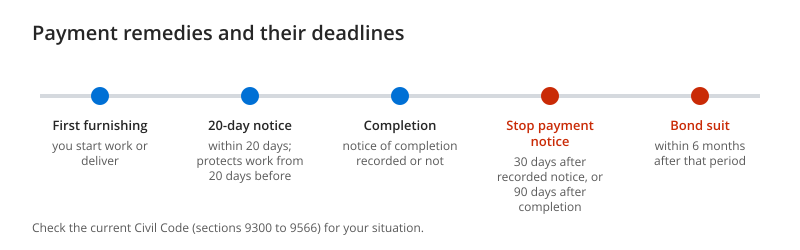

Getting paid: preliminary notices, stop payment notices and bond claims
In one sentence: you can't put a lien on public property, so on public works the unpaid sub or supplier protects itself with a 20-day preliminary notice, then a stop payment notice on the agency's funds or a claim on the prime's payment bond.

The 20-day preliminary notice
If you don't have a direct contract with the prime (a lower-tier sub, a supplier to a sub) you must give a preliminary notice to the agency, the prime and the surety if known. It protects your rights for work provided within 20 days before the notice and afterward, so send it within 20 days of first furnishing labor or material. Late is better than never: it still protects later work.
Subs and suppliers with a direct contract with the prime generally don't need it for a stop payment notice, but many send it anyway.
Stop payment notice
A written notice to the agency that you're owed money. The agency must then withhold enough from the prime's payments to cover the claim. Timing: give it before the earlier of 30 days after a notice of completion or cessation is recorded, or 90 days after completion or cessation if none is recorded. A lawsuit to enforce it has its own deadline after that.
Payment bond claim
A claim on the prime's payment bond, to the surety and the prime. The preliminary notice keeps this right open. If you didn't give one, the Civil Code still lets you claim by written notice to the surety and the prime within 15 days after a notice of completion is recorded, or 75 days after completion if none is recorded (section 9560). A lawsuit on the bond must be filed within 6 months after the period for giving stop payment notices ends. Check the current Civil Code sections 9550–9566 for your situation.
For primes
When a stop payment notice is served on the agency, it holds your money. Resolve it with the claimant, or provide a release bond if the contract allows. Keep conditional and unconditional releases from every sub and supplier as you pay them.
PM notes
Ask the agency to tell you when it records the notice of completion. Every deadline in this article starts from it.
Common mistakes / what agencies actually check
- Never sending a preliminary notice because "we always get paid on this agency's jobs".
- Missing the 30-day window after the notice of completion is recorded.
- Paying a sub in full without collecting releases from its suppliers.